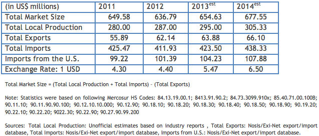

Market Estimates
Overview
Sub-Sector Best Prospects
Opportunities
Web Resources

2012 market share: United States: 25%; Germany: 12%; Japan: 12%; China: 11%; Brazil 3%
Medical equipment imports during 2011 experienced an exceptional surge. While imports decreased in general in 2012, imports from the U.S. grew slightly. The United States continues to be the leading supplier of imported medical products and currently holds 26 percent market share, particularly in high-technology products. Imports in the overall medical product sector have been estimated to traditionally account for around 70 percent of the total market.
Imports of medical products must be performed by an importer registered with the ANMAT (the Argentine equivalent to the FDA) as a frequent importer of medical equipment.
Return to Top
Opportunities within the market for U.S. exports include middle and high-end technology products that do not compete with locally manufactured ones, among which are electro diagnostic equipment, ultrasound equipment, and other instruments and apparatus. There may also be potential in the market for implants, stents, cardiac valves, pacemakers, and specialized disposables.
Return to Top
Medical technology and products developed and produced in the United Sates are highly regarded in Argentina. Medical products that cannot be manufactured locally continue to present strong opportunities for U.S. exporters, particularly when offering high quality products at competitive prices. In any case, product potential should be determined on a case-by-case basis.
Argentina remains a key market for U.S. exports to Latin America. However, recent controls imposed by the Argentine government have made exporting goods from any country to Argentina more difficult. It is important for would-be exporters to Argentina to confirm that their Argentine customer has received all the necessary permits. (See “Trade Regulations and Standards” report for more information).
Return to Top
Among medical equipment related websites in Argentina are:
• http://www.anmat.gov.ar (Administración Nacional de Medicamentos, Alimentos y Tecnologia Medica or ANMAT - equivalent to USFDA)
• http://www.caehfa.org.ar/ (Association of Argentine Manufacturers of Medical Hospital Equipment)
• http://www.cadieel.org.ar (Association of Electronic; Electro-mechanical and Lighting-related industries (Electromedicine)
Return to Top